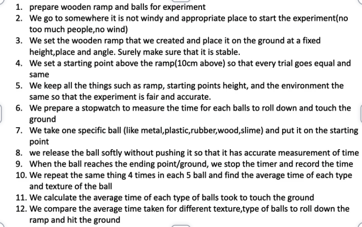

Home Page
Independent Variables, Dependent Variables and Methods
Independent Variables
Texture and weight of the ball
- Wooden ball (rough)
- Plastic/Golf ball (bumpy, lumpy)
- Rubber ball (soft, very flexible, very soft, squishy, very muddy)
- Clay ball (very smooth, squishy, bit flexible)
- Metal ball (hard, smooth)
Dependent Variables
Measuring time (second = xx:xx sec) with a timer.
We start the timer as the ball gets released from the starting point,
which is 10 cm above the ramp.
(Time rolling down vs texture of the ball)
Methods
The image below shows the methods and setup of the experiment.
